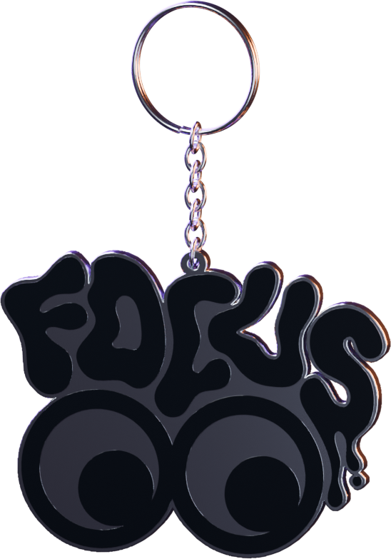
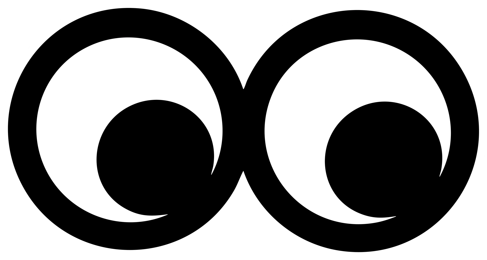
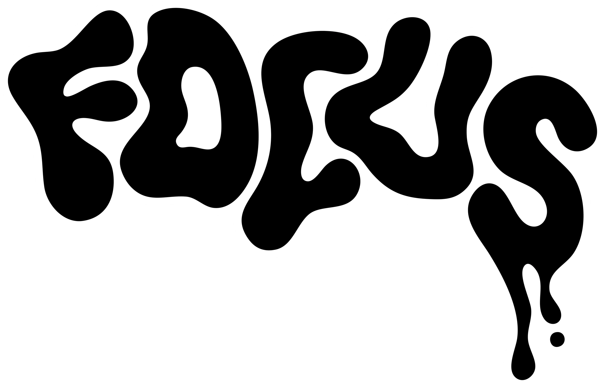
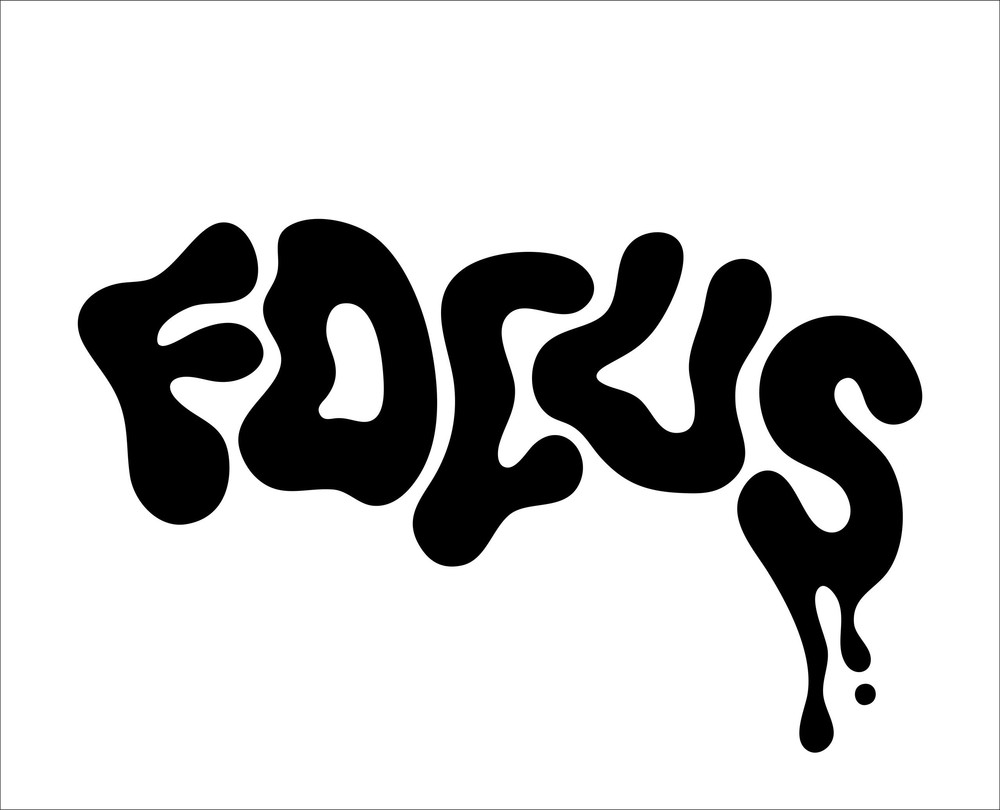
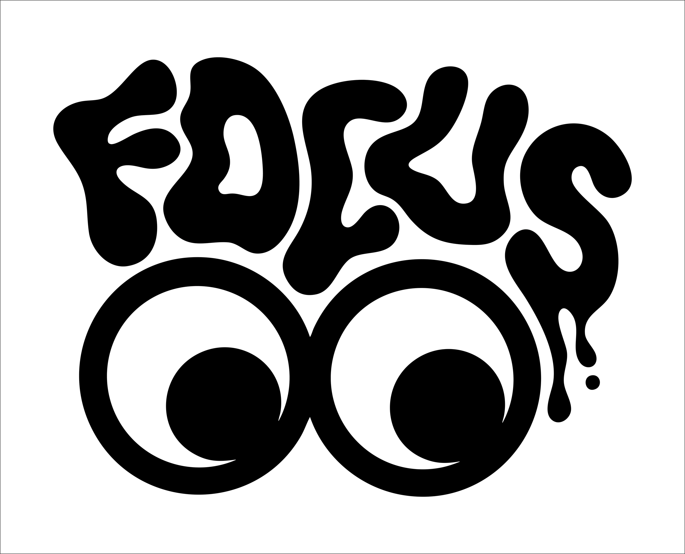
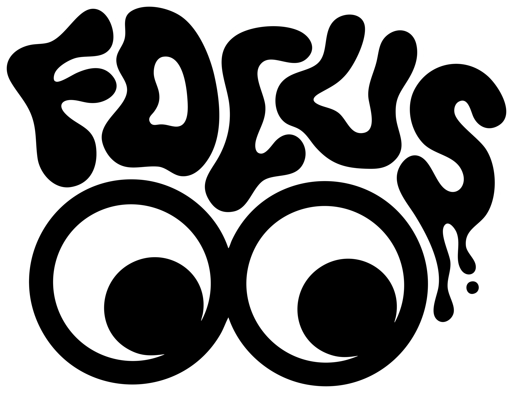

Focus

Un podcast entre création
et psychologie.
Des conversations avec des créateurs sur leur parcours, leurs doutes et leur vision - à chaque épisode, un objet en garde la trace. Un projet co-créé avec Loli Martinez.
On oublie vite.
Focus reste.
Le point de départ du projet,
avant l’identité et l’objet.
On peut écouter beaucoup de podcasts, être marqué par un épisode, un intervenant, une idée - puis en oublier le message en quelques jours. On consomme vite, et on oublie vite.
Focus est né de ce constat : pas expliquer le comment de la création, mais le pourquoi. À chaque épisode, un invité du monde créatif. On parle de doutes, de processus, d’intentions. Et à la fin, quelque chose de concret en sort - de quoi prolonger la conversation après l’écoute, plutôt que de la laisser s’effacer.
Deux O.
Un regard.
Une typo organique.
Les yeux comme signature.

MISE AU POINT / FOCUS
Le logo Focus est dans la continuité de l’univers Gloomy Graphic : une typo organique, fluide, volontairement déformée. Les deux O deviennent des yeux, pour traduire la concentration et l’introspection - ce regard devient la signature du projet, celle qu’on retrouve ensuite sur les stickers, le porte-clé et les affiches.
Un regard.
À emporter.
Après l’écoute, garder une trace
concrète du regard Focus.
Une conversation s’écoute, puis s’efface. Le porte-clé prolonge le regard Focus au-delà de l’écran : un objet en volume, à garder sur soi, qui rappelle l’épisode et l’identité qui va avec - la même logique que les futures affiches de collection, transformer une réflexion en objet.
Le même regard.
Un autre espace.
Le vrai site, en violet ou en orange.
Faites défiler à l’intérieur.
Une affiche.
Après chaque épisode.
Papier mat 350g, tirage numéroté,
certificat d’authenticité et stickers.
Après chaque conversation, une affiche sort. Elle part de l’idée centrale de l’échange - une manière de graver les mots dans quelque chose de concret, pour transformer une réflexion en objet qu’on garde. Aucune affiche finale n’est présentée ici : la série reste à écrire, épisode après épisode.
Graver une idée
dans quelque chose de concret.
Un fragment
de conversation.
Une pièce numérotée,
à garder.
Prendre le temps
d’écouter.
Création, doutes, parcours, psychologie.
Le futur espace d’écoute de Focus.
Aucun épisode disponible pour le moment.
Entre création
et psychologie.
Focus est un podcast en développement autour des parcours créatifs, des doutes et de la vision de celles et ceux qui créent. Le regard relie les conversations à l’identité visuelle.
Le porte-clé et les stickers donnent une présence physique au projet. Les futures affiches de collection prolongeront cette idée : garder quelque chose d’une conversation.
- Co-création
- Tristan Raoult × Loli Martinez
- Projet présenté
- Identité graphique, objets et expérience web
- Statut
- Projet en développement · affiches et audio à venir
Un projet commun, présenté ici dans le portfolio de Tristan Raoult.
De la lettre
au regard.
Éléments graphiques originaux et déclinaisons.
Le langage visuel du projet.


Le lettrage organique apporte le mouvement. Les yeux installent une présence. Le contour permet à l’ensemble de devenir un sticker, puis un objet en volume.
Voir le rendu original du porte-clé ↗
Tout commence
par un regard.